What is Kubernetes
and Why Should You Care?
Linux Kernel
- Namespaces
- Capabilities
- Virtual File Systems
Processes
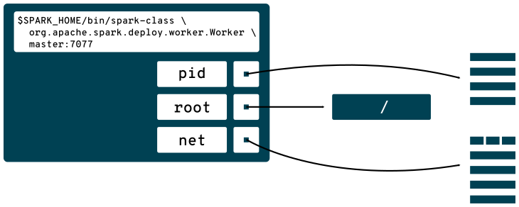Container Processes
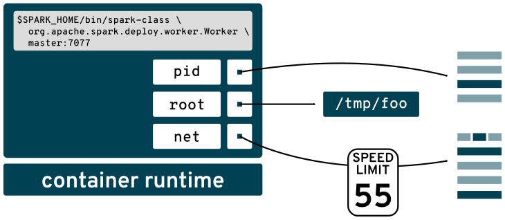Container Orchestration
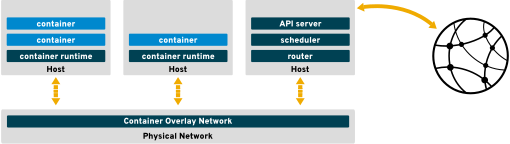Scheduling
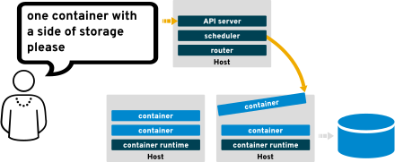Routing
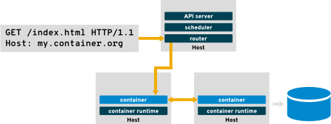Lifecycle
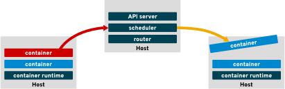Kubernetes Deep Dive
κῠβερνήτης • (kubernḗtēs) • Noun
- a captain, a steersman, a pilot, a navigator
- (figuratively) a guide

www.cncf.io
Basic Architecture
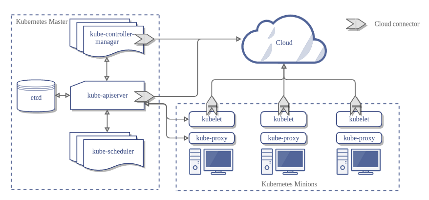Objects
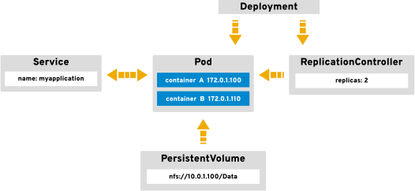Declarative API
apiVersion: v1
kind: Pod
metadata:
name: pod-example
spec:
containers:
- name: fedora
image: fedora:28
command: ["echo"]
args: ["Hello World"]
Command Line Ease
$ kubectl get all
NAME DESIRED CURRENT AGE
statefulsets/kafka 3 3 2d
statefulsets/zookeeper 1 1 2d
NAME READY STATUS RESTARTS AGE
po/kafka-0 1/1 Running 2 2d
po/kafka-1 1/1 Running 0 2d
po/kafka-2 1/1 Running 0 2d
po/zookeeper-0 1/1 Running 0 2d
NAME TYPE CLUSTER-IP EXTERNAL-IP PORT(S) AGE
svc/kafka ClusterIP 172.30.159.88 none 9092/TCP 2d
svc/kafka-headless ClusterIP None none 9092/TCP 2d
svc/zookeeper ClusterIP 172.30.4.44 none 2181/TCP 2d
svc/zookeeper-headless ClusterIP None none 2181/TCP,2888/TCP,3888/TCP 2d
Labels and Selectors
$ kubectl describe svc/kafka Name: kafka Namespace: kafka Labels: app=strimzi Annotations: openshift.io/generated-by=OpenShiftNewApp Selector: name=kafka Type: ClusterIP IP: 172.30.159.88 Port: kafka 9092/TCP TargetPort: 9092/TCP Endpoints: 172.17.0.4:9092,172.17.0.7:9092,172.17.0.8:9092 Session Affinity: None Events:
$ kubectl get all -l name=kafka
NAME DESIRED CURRENT AGE
statefulsets/kafka 3 3 2d
NAME READY STATUS RESTARTS AGE
po/kafka-0 1/1 Running 2 2d
po/kafka-1 1/1 Running 0 2d
po/kafka-2 1/1 Running 0 2d
Why Should You Care?
Infrastructure
Collaboration
Traditional Perspective
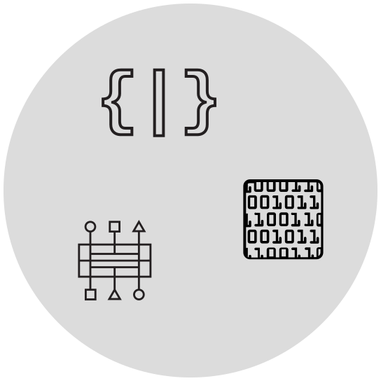Microservice Evolution
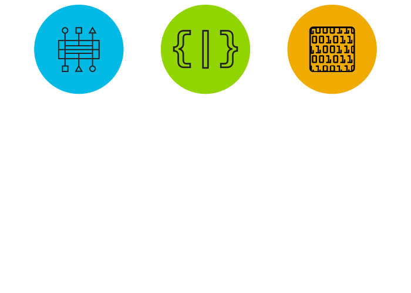Scaling
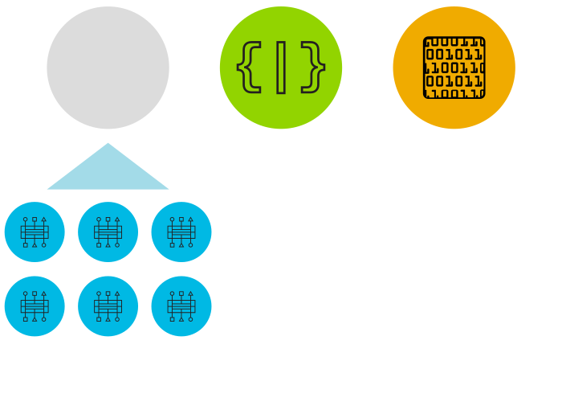Flexibility
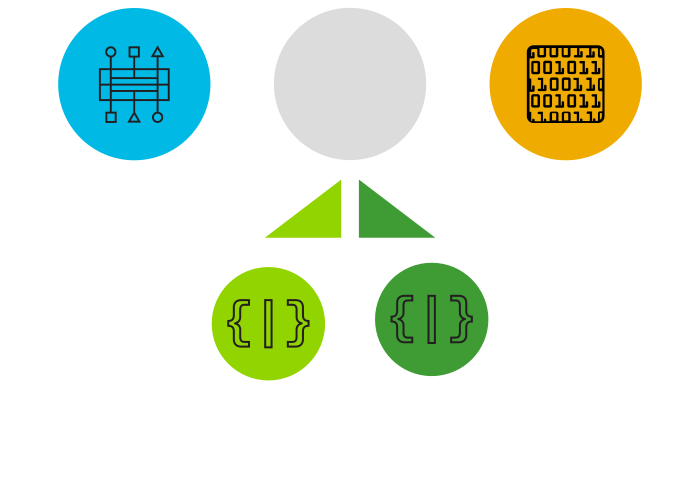Health
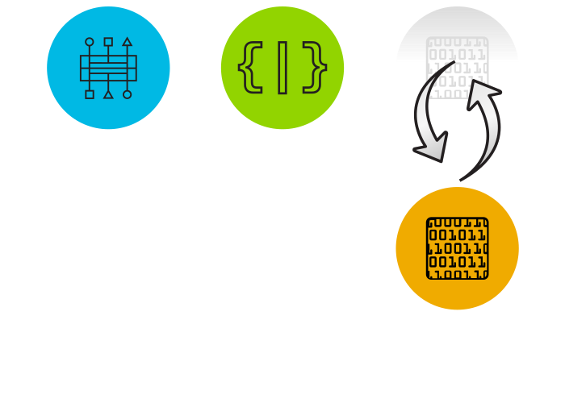Case Study
Architecture
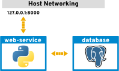Workflow
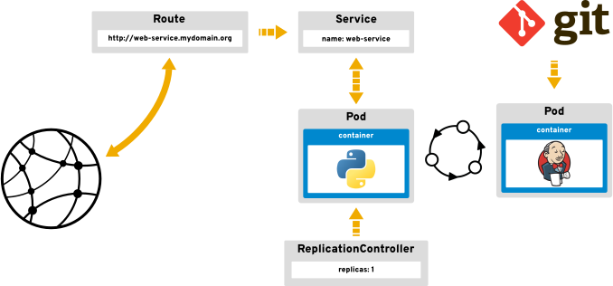Demo
Other Fish
Recap
Kubernetes • kubernetes.io
OpenShift • www.openshift.org
Cloud Native Computing Foundation • www.cncf.io
This presentation
github.com/elmiko/slidedecks/tree/2018/penguicon-kubernetes
Stay in touch!
Michael McCune
Twitter • @FOSSjunkie
elmiko.github.io